A note on the images. The photographs in this book were AI-generated as direction references — to show lighting, crop, mood and modesty. They are not final assets. Per Section II, the real campaign must be shot with real hair.
Gitty's line is the whole strategy. It sounds like a contradiction. It isn't — because luxury houses already sell desire without showing skin. They do it through restraint, gesture, light and craft. That is exactly the bridge to a modest brand.
The single most Ralph image — a fall of waves in warm directional light, a hand setting the hair, in a quiet ivory frame — is at the same time the most Chanel and the most tznius picture we can make. That is the identity, not a compromise.
You cannot build a $2,000–$6,000 sheitel brand on AI images. It is the one corner that cannot be cut — and here is why, for the owners.
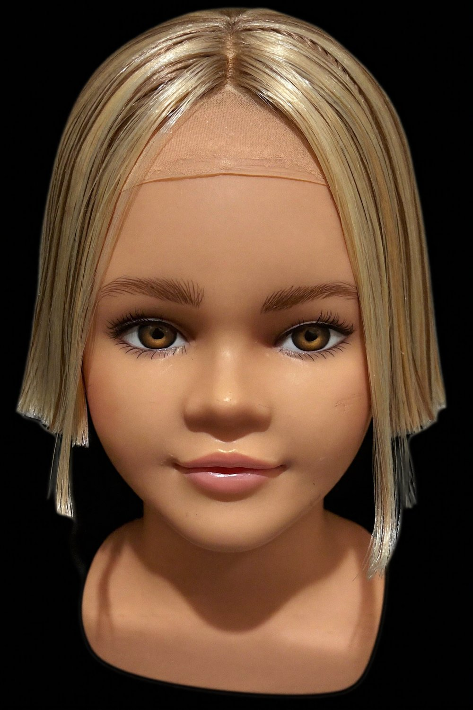
The rule. AI is welcome for mood, backgrounds and abstract texture. The actual wig, on a head, that a customer judges and buys — real photograph, and ideally video (hair in motion is the proof of realism).
Ten rules. If every asset obeys them, the brand looks expensive — automatically.
One soft source, ~45°, gently wrapping. Shadow on the far side. Never flat, even, ring-lit brightness — that is the #1 cheap tell.
The subject fills under 30% of the frame. Negative space is mandatory. Emptiness reads as confidence.
Warm ivory / champagne / antique-gold for product. Reserve deep black-&-white for heritage and film only. Never over-saturate.
Tight and partial — nape, profile, hands-in-hair, back-of-head — over full-frontal portraits.
Carried by hands, hair movement, gaze and texture. Never by skin. This is the whole modest-luxury technique.
Three-quarter or downward, mysterious. Never a direct, smiling, “selling” look to camera in hero imagery.
A Didot-leaning serif wordmark, all-caps, wide letter-spacing. White space around type = 3× what feels enough.
No props beyond one symbolic object. No text on photos. No clutter. One focal point per frame.
Brand film = slow, archival black-&-white, craftsman's hands. No fast cuts, no upbeat pop.
Absolute. High necklines, collarbone-up, or angles that never raise the question. No exceptions, ever.
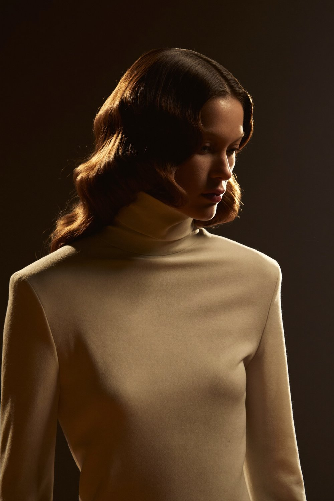
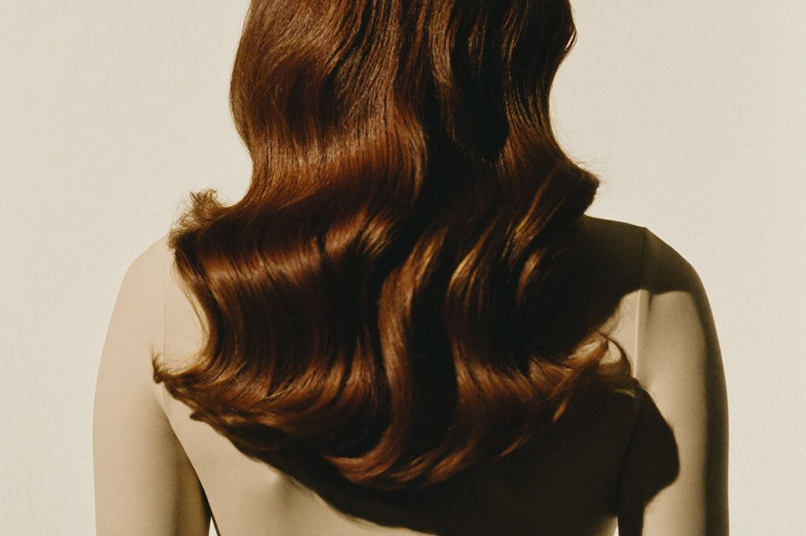
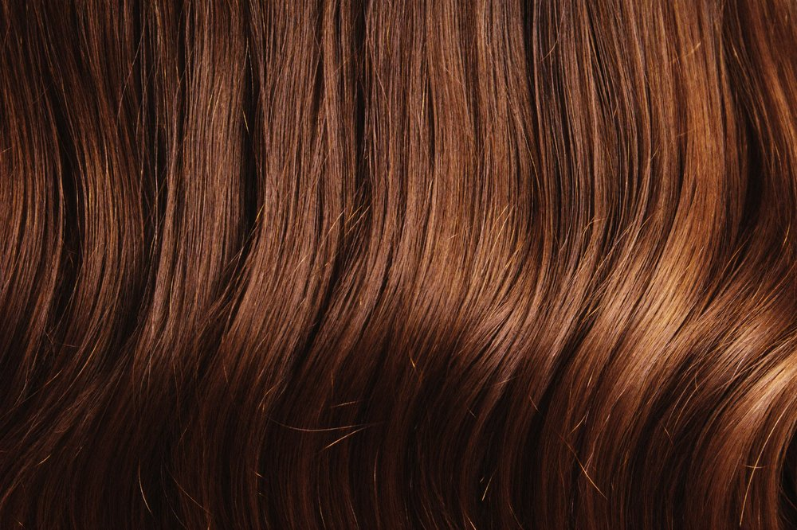
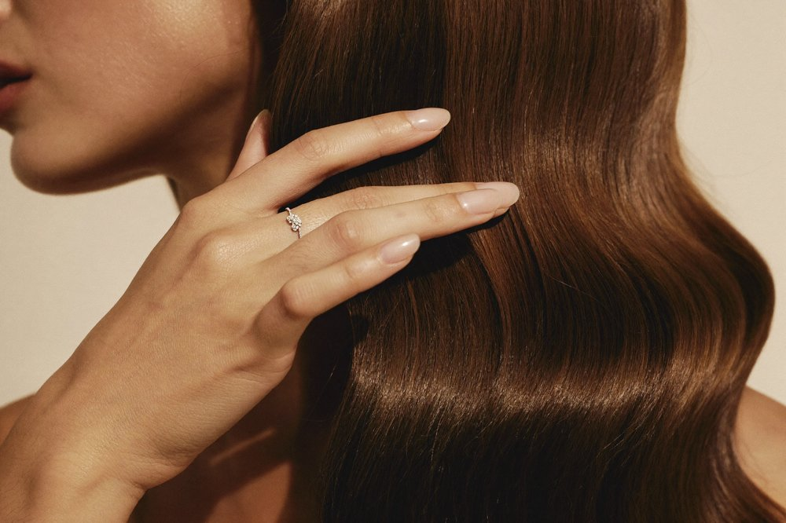
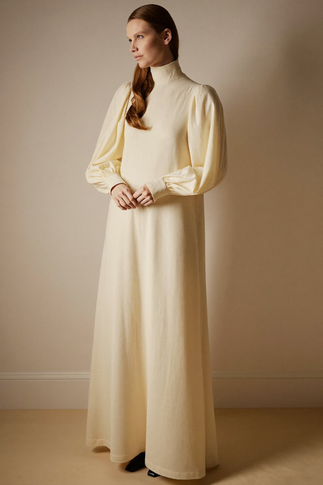
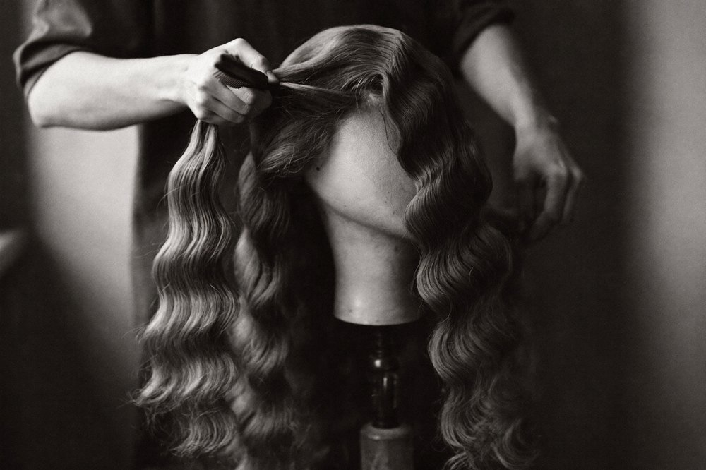
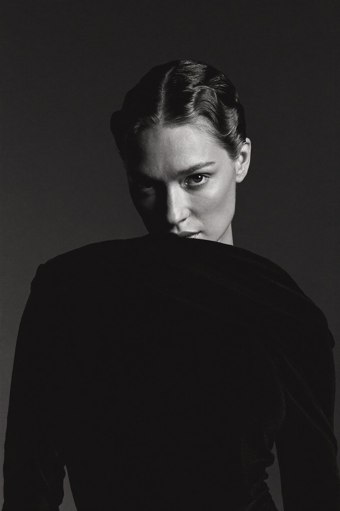
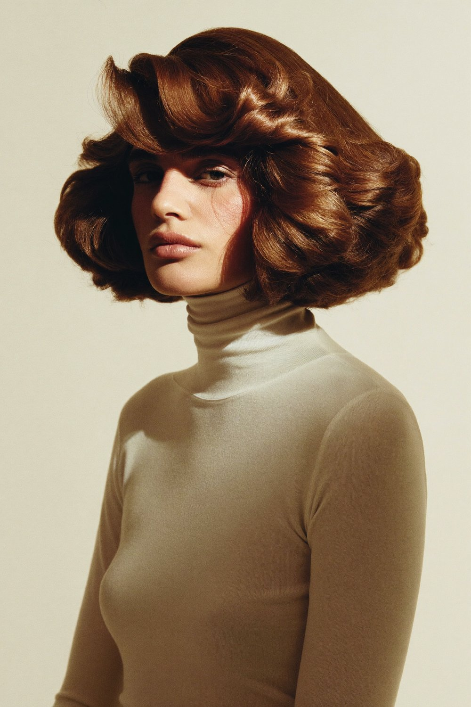
A fall of glossy waves seen from behind, cream high-neck top, warm 45° light, ivory void. The hair is the entire subject — aspirational, sensual through movement, and it never raises a modesty question because there is no front to cover.
Why it passes: directional light, negative space, warm palette, partial crop, absolute coverage. This is the brand's default hero.
A single elegant hand drawing through the waves — a delicate ring, warm light, no face. This is the modest-luxury technique borrowed straight from the jewellery houses: desire is carried by gesture and touch, not by the body.
Why it passes: tactile, intimate, entirely modest, and it proves softness — the thing a buyer wants to feel before she buys.
An extreme close-up of the strands, light catching individual fibres. Abstract, gorgeous, and 100% modest because it is pure texture. It also does real sales work: it shows the diffuse, matte sheen of real human hair — the opposite of synthetic plastic gloss.
Why it passes: it makes “European virgin hair” visible instead of just claimed.
A three-quarter profile, cream turtleneck to the chin, warm rim light haloing the hair, a downward gaze. Elegant and human without a single coverage compromise — the “Editorial track” hero for the American and European market.
Why it passes: high neck, no direct sell-to-camera, warm single light, quiet background.
Hands setting hair on a wooden block, in soft window light, in black-and-white. This is the “since 1966” story no competitor can copy — and it doubles as the perfect faceless image for the strictest Israeli channels.
Why it passes: it sells the maker, not the wearer. Works everywhere, in every market.
A floor-length cream dress, long sleeves, high neck, hair over one shoulder as the focal point, quiet ivory space. Proof that “aspirational” and “tznius” are the same picture when the styling is done right.
Why it passes: full coverage, negative space, one focal point, warm restraint.
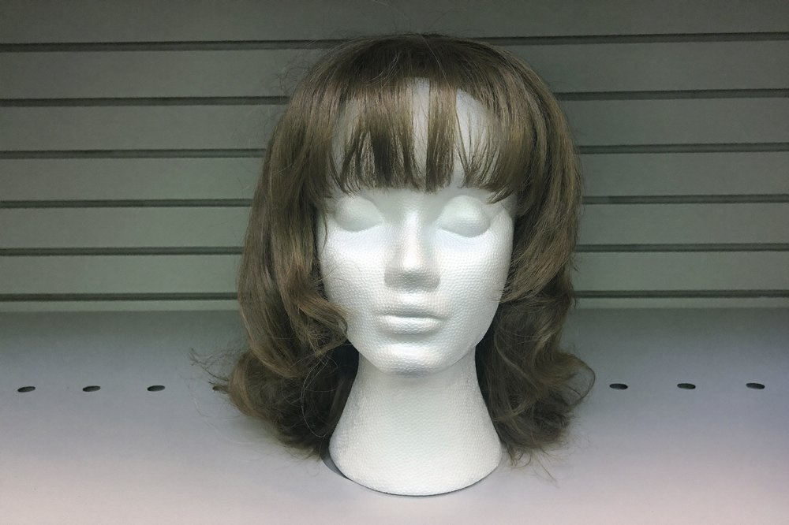
Styrofoam heads under flat store light are the single fastest way to look cheap. It reads as “stock,” not “fashion.” Even for faceless Israel-facing content, use a real head, a texture macro, or the atelier — never a mannequin.
Why it fails: no light, no life, no craft, no aspiration.
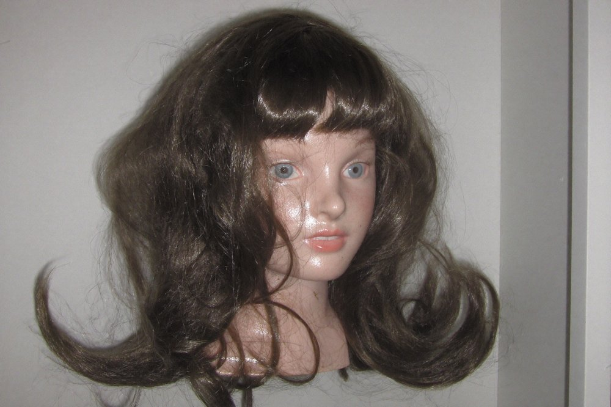
Uniform mirror-gloss, stiff helmet volume, a doll-like finish. Synthetic fibre reflects light in a flat plastic way that real hair never does — and hard flash makes it worse. This is precisely the look Ralph exists to beat.
Why it fails: plastic sheen, no movement, harsh flat flash, uncanny.
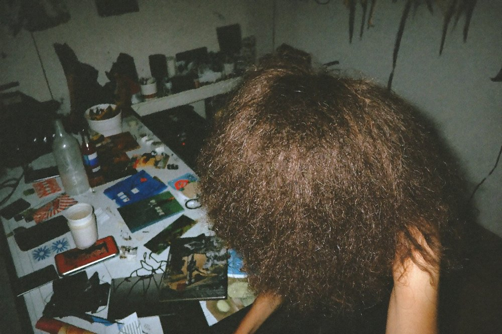
Busy background, on-camera flash, uneven light. It may be an authentic client photo — but authenticity without art direction reads as amateur, and amateur kills a luxury price. (Real-client content is powerful; it just has to be shot, not snapped.)
Why it fails: clutter, flat flash, no focal point, no palette.
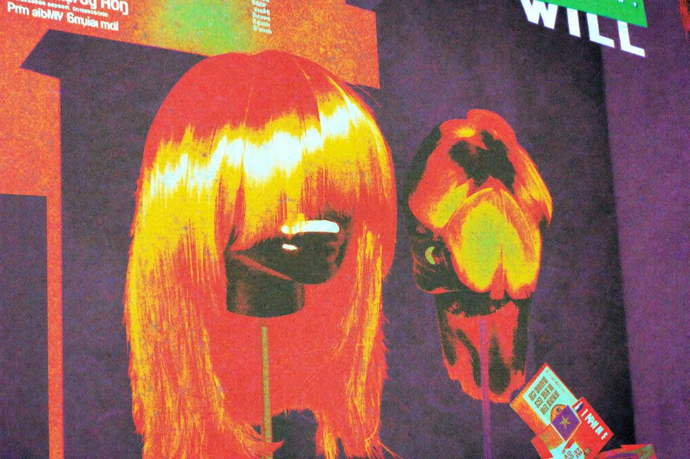
Punchy orange/red, crushed contrast, e-commerce over-sharpening. Saturation reads as “discount.” Ralph's colour is warm, low, and quiet — the restraint is the price tag.
Why it fails: saturation, harsh contrast, cheap processing.
If an image does these things, it's on-brand. Use it.
If an image does any of these, it does not ship — no exceptions.
These modesty failures are stated as rules, not illustrated — we hold ourselves to the same standard as the work.
Hand this to the photographer. It turns the whole book into a day of shooting.
| Light | One soft key at ~45°; a dedicated hair/rim light high and behind for the “halo” that gives strands dimension. Contain it with a grid — too much power blows out texture. Never flat or frontal flash. |
| Lens & settings | 90–105mm macro for strand detail (f/8–f/16 for sharpness across the strands); f/2.8–f/4 for portrait separation. Shoot tethered. Expect ~50 frames per look — hair never falls the same way twice. |
| Prep | Dry shampoo / texturizing spray to kill synthetic shine before shooting. Don't over-retouch flyaways in post — that creates fake “helmet hair.” |
| Palette | Warm ivory seamless for product; window-lit workshop for heritage (B&W). One world, held all day. |
| Modesty | Collarbone-up or high necklines/long sleeves already styled in. Upright, confident poses. No coverage decisions left to the crop. |
America and Israel genuinely conflict on what may be shown. Don't blend them — run one brand spine in two registers.
Audience: Modern-Orthodox / Yeshivish buyers who want undetectable, styled, expensive hair.
Imagery: face-forward (collarbone-up), styled, aspirational — the profile & turtleneck heroes.
Voice: “Chanel” — aspirational, English (Yiddish for warmth).
Channel: Instagram, WhatsApp, the pop-up tour, trunk shows.
Audience: Bnei-Brak-coded, humility-first; markets where a woman's face can't be printed.
Imagery: faceless — back-of-head, hands, texture, the workshop. Old-world craft, not the wearer.
Voice: discreet, kavod-coded, Hebrew; no superlatives.
Channel: word-of-mouth, salon reputation, vetted lists, print-adjacent.
The gift: the faceless “Atelier” track isn't a compromise — luxury houses shoot faceless product all the time. It works everywhere, including the strictest channels. Test every Israel-facing asset against one question: “Would this pass in Yated?”
Chanel-level polish.
Bnei-Brak-level discretion.
The luxury is in the restraint.